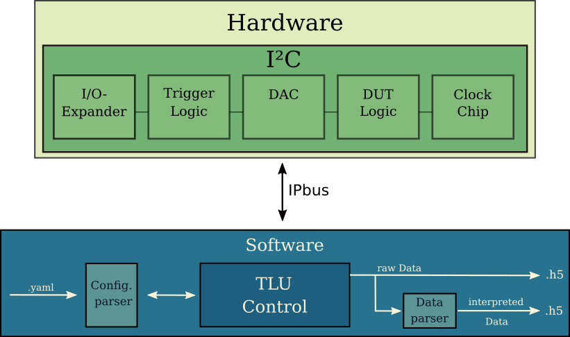
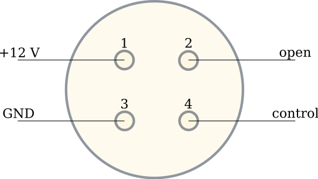
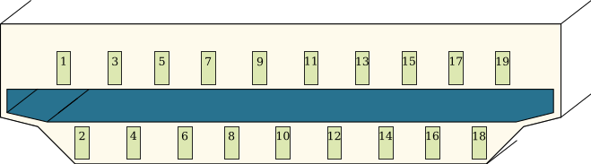
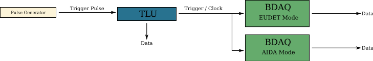

Documentation#
{kind=link}
Introduction#
The documentation presented here describes a newly adapted Python based control system for the AIDA-2020 Trigger Logic Unit (TLU). This system is mostly based upon the EUDAQ2 TLU software (eudaq/eudaq) with some additional features for better usability and integration into the SiLab-Bonn infrastructure. In the following the control of the different hardware components as well as additional features of the control software are described. And a rough summary of the original documentation (https://ohwr.org/project/fmc-mtlu) is presented. During developing the present software I stumbled over some technical details which are also shown below.
Hardware#
Inter-Integrated Circuit I^2C#
The configuration of the different board features and hardware components goes via I^2C interface. This interface is widely used as a serial communication bus and provides the protocol for the Ethernet communication driver. IPbus (https://ipbus.web.cern.ch/doc/user/html/) allows the access to the FPGA hardware of the TLU. The user interface uHAL (https://ipbus.web.cern.ch/doc/user/html/software/uhalQuickTutorial.html) is a C++/Python library for all needed read/write hardware level functionality. Each register has an identifying address. The addresses can be found in a yaml file (take a look at /misc). The script i2c.py writes and reads bits to and from each of these registers.
I/O Expander#
The TLU uses four I/O expander PCA9539PW. Each of these chips provide two 8-bit input output expansions and can be used in parallel. The 11 front panel LEDs are controlled by two expanders where the other two configure the 4 HDMI inputs and/or outputs of the DUT interfaces. To configure the chip and to set for e.q. the polarity of one of the 8-bit expansions a command byte is set to the register. Afterwards the actual data follows. The script ioexpander_controller.py writes the command byte to the right expander. To control the four expanders the script uses an identifier for the two LED expanders (io_exp = 1) and two output expanders (io_exp = 2). To further differentiate each of the two expanders another identifier is used (exp_id).
Clock Chip#
A Si5345 is used for clock generation. This clock is used internally in for e.q. the trigger generation, but can also be distributed to each of the DUT’s for synchronous operating mode. The chip allows the generation of internal triggers in principle up to 160 MHz. The trigger rate is calculated from clock intervals this leads to a rounding error for higher trigger frequencies. So higher trigger frequencies are shifted slightly.
The clock chip needs to be configured. To do so a configuration file containing ~380 address-data pairs is written to the chip via I^2C. This configuration file can be generated by software (https://www.skyworksinc.com/en/application-pages/clockbuilder-pro-software). The default clock frequency using the default configuration file is 40 MHz. For now this frequency can not be changed. The script clock_controller.py configures the chip. Most of the other functions are just used for bug fixing.
Digital-Analog-Converter DAC#
To transform the different output and input voltages from digital signals to analog signals (or the other way around), three AD5665R DAC’s are used. Here one DAC’s is used for the photomultiplier (PMT) power outputs the other two for the threshold of the trigger inputs. According to the data sheet the DAC’s have an internal reference voltage of 2.5 V. Nevertheless an external voltage of 1.3 V is set as default for all implemented user cases. Each DAC has four output pins that can be used in parallel. Functions to control the DAC’s can be found in voltage_controller.
Power DAC’s#
The four output channels of one DAC are dedicated to the control voltage of the four different PMT power outputs. Each output has a range of 0 V to 1 V, using the external reference voltage. Where an internal reference voltage leads to a possible output voltage of up to 2 V.
Power Module#
Four 4-pin LEMO connectors not only deliver a control voltage but also distribute power in general to the PMT’s. The LEMO has the following pin connections. Pin 1 is used for 12 V general power, pin 2 is not connected. The control voltage is on pin 3 and has the range [0; 1] V. At last pin 4 is connected to ground.
{kind=link}
Three green LEDs on the front panel indicate the correct functioning of the power module. The POWER LED for 12 V supply voltage, the other two are for 5 V voltage regulators.
Threshold DAC’s#
To transform the analog signals of the 6 trigger inputs to digital signals two DAC’s are in use. The first two inputs are connected to one DAC the last 4 to the other one. Each input channel is connected in reverse to the DAC input. A mapping in software corrects these connections. To set the threshold of one input channel one uses the function set_threshold with the trigger input from 1 to 6 and set the threshold to Volt. The threshold range is [-1.3; 1.3] V. The calculated voltage resolution is about 40 uV. These values correspond to the external reference voltage, as the default. Also some people say trigger input 2 has some glitches.
DUT interfaces (HDMI connectors)#
Four HDMI connectors are used as the interface between the TLU and the different DUT devices. Each pin works bidirectional any two differential signal pairs can be set as output or input. The direction of the HDMI pins is set by two I/O expanders with the following signal pins. Where the first differential signal is a clock signal (CLK). This clock signal can be enabled/disabled and is provided either by the Clock Chip or directly from the FPGA clock. For now the clock from the FPGA does not work. Depending on the operating mode also different trigger words are sent through the clock line (e.q. trigger number in EUDET mode). The next signal is the content (CONT). This signal is used by the TLU to issue control commands. The BUSY signal is usually set by the DUT and raises a VETO for the generation of new trigger depending on operating mode. SPARE is only used by the AIDA mode and raises a reset signal at the start of runs and should also be driven by the TLU. Trigger (TRIG) is set by the TLU at default. Through the trigger line not only trigger signals are issued but also trigger words depending on the operating mode. Setting the correct polarity to these pins is essential for correct operation working of the TLU. One should also note that DUT interface should not be used in AIDA mode according to higher sources.
{kind=link}
HDMI PIN |
HDMI Signal Name |
|---|---|
1 |
CLK |
2 |
GND |
3 |
CLK* |
4 |
CONT |
5 |
GND |
6 |
CONT* |
7 |
BUSY |
8 |
GND |
9 |
BUSY* |
10 |
SPARE |
11 |
GND |
12 |
SPARE* |
13 |
n.c. |
14 |
POWER |
15 |
TRIG |
16 |
TRIG* |
17 |
GND |
18 |
n.c. |
19 |
n.c. |
DUT Logic#
The DUT logic in dut_controller.py sets the DUT operating modes. Different DUT devices are enabled or disabled by the function set_dut_mask. One important thing is to only enable DUT interfaces that are in use. A not connected device configured in handshake mode blocks the working of the TLU. The operating mode is set by the function set_dut_mask_mode each DUT is controlled by two bits in an 8-bit WORD. Bit 0 and 1 control DUT 1, bit 2 and 3 DUT 2 and so on. AIDA mode is set by setting the bits to 11 and EUDET mode by setting 00. So to set DUT 1 to AIDA mode and the rest to EUDET mode one hast to set the bit-WORD ‘00000011’ to the function.
Trigger Logic#
The TLU can produce valid triggers from six different trigger inputs. Each input can accept or veto new triggers. Between each trigger input there is also the possibility to set ‘AND’ or ‘OR’. This leads to 64 possible combinations of so-called trigger words. Where each trigger word describes one specific trigger configuration. One obtains the resulting trigger configuration to write into the trigger logic register by adding up all desired valid trigger configurations. For example if one need triggers from input 1 or input 2. Than all valid trigger combinations, ignoring the inputs channels 3-6 are:
Input 1 |
Input 2 |
|---|---|
1 |
0 |
0 |
1 |
1 |
1 |
The software uses two different variants of these words. A long word variant which is just the 64-bit trigger word. For the second variant the long word is split into two 32-bit words (mask_low and mask_high). To help with the generation of these trigger words, the software uses a specific function to translate the trigger settings in the configuration file to these words.
The trigger signals from the different trigger inputs can be stretched and delayed accounting for different trigger hardware setups. Also, the TLU can trigger on the rising or falling edge of incoming trigger signals.
An additional feature of the trigger logic is the generation of internal triggers. In the configuration file a specific trigger frequency can be set and the TLU will then generate triggers with said frequency. The theoretical range of these triggers is between 0 Hz and 160 MHz. Because the trigger frequency is calculated in reference to a clock interval, there is for now a rounding error for higher frequency. This shifts the actual output trigger frequency.
The number of triggers since the last trigger VETO is stored together with the total number of triggers per run. From these numbers general status messages for e.q. the trigger rate are generated. These status messages can also be distributed over a ZMQ socket using the online monitor.
Operating Modes#
The TLU runs in different operating modes. This allows more flexibility for different DUT readout setups. Different modes can provide clock synchronizations or distributes the trigger number together with the trigger signal. Each DUT can be run in different operating modes where a single one vetos new triggers for all devices. This vetoing for all devices can be disabled (but is not implemented).
EUDET Handshake Mode#
The TLU sets TRIGGER to high for 1 clock cycles. Afterwards the DUT asserts BUSY and sends a clock to the TLU through CLOCK. This clocks out the trigger number from the TLU to TRIGGER. To set the software to the EUDET operating mode a 0b00 is set to the according DUT logic. The clock output needs to be disabled for this mode to work. If the clock output is enabled then the trigger number is not clocked out correctly. Only the least significant 15 bit of the trigger word are sent out.
AIDA Mode#
In AIDA mode the clock of the TLU and the DUT is synchronized. For this the TLU clock needs to be distributed. The distribution of the clock via the LEMO has the problem that the clock signal form no longer arrives cleanly at the device. So distributing the clock using the HDMI connectors is advised. An important step is to synchronize all delays (e.q. different cable length) of the clock signal with the trigger signal if encountered.
At the start of a run the TLU sends out a RESET signal to the DUT. This signal can then be used by the DUT to synchronize the timestamp of the device and the TLU. Then the TLU sends triggers continuously to the DUT. Where each trigger signal has a length of one clock cycle. To generate a new trigger no answer of the DUT is needed. But the DUT can veto new trigger signals at any time by asserting BUSY. The following is a checklist for the working of the AIDA mode together with the (SiLab-Bonn) BDAQ board.
AIDA Mode BDAQ Firmware. Here the external trigger clock is used also internally.
- Changes in testbench yaml.
Change Trigger Mode from 3 to 2.
Change Trigger Handshake Wait Cycle from 5 to 1.
Use special clock cable configuration. So enable the clock LEMO output of the TLU and connect the clock output to the BDAQ board. Or use special HDMI RJ45 AIDA mode adapter.
Check Cable lengths to synchronize clock and trigger signals.
Note when starting triggering, the DUT scan needs to be started before the TLU scan for the timestamp RESET to arrive.
For now also the AIDA mode needs to be enabled in the scan configurations. This can for now only be found on a special TJ DAQ branch. Or in the testbench yaml, depending on the setup there is to enable RESET option.
If only one BDAQ board is used in AIDA mode there is a chance for two very fast trigger to occur right one after the other. If the distance between the triggers is smaller than the distance between the first trigger signal and the BUSY signal. Then the tlu sends out two triggers because no handshake is awaited. This leads to an event number drift. This can be prevented by stretching the trigger input signal by some clock cycles. Another important thing is to follow the procedure for starting an AIDA run:
configure TLU
start all DUT’s, telescopes and time reference plane scans
start TLU run
AIDA Mode with Trigger Number#
This operating mode is an extension of the AIDA mode. The difference to the standard AIDA mode is, that additionally at each trigger the trigger number is sent through RESET.
Additional features#
Online Monitor#
The Online Monitor (SiLab-Bonn/online_monitor) creates real-time plots of a dataset. This allows live observation of the trigger rate during operation. The TLU scripts sends status information containing the trigger rate, event number, trigger number and run time to a converter script. The converter script translates the data format and sends the data to a receiver script. The online monitor uses a receiver script to create the real time data plots. The Data is sent and received using ZMQ sockets (https://zeromq.org/). The ZMQ connection can be enabled and disabled in the configuration file. To start the online monitor one navigates to the directory and uses for e.q. the terminal command:
start_online_monitor configuration.yaml
Another command reliable stops all instances of the running online monitor:
stop_online_monitor
Tests#
With pytest (https://docs.pytest.org/en/stable/) the AIDA TLU control program can be tested. In the test directory different testing scripts can be found. The test setup helps to find bugs when further developing the TLU program and also to check for depreciated functions. The command:
pytest
executes the complete testing infrastructure. But also the individual log outputs can be displayed.
pytest -sv
Tests can be run individually.
There is also an implemented AIDA-TLU mock, to allow tests and software development without hardware.
This mock is used as a default.
To test with connected hardware set an environment variable `HW=True``:
.. code-block:: console
HW=True pytest -sv
The tests load the configuration file `tlu_test_configuration.yaml`.
Individual settings in the test configuration file can not be changed.
Log Level#
To set different log levels change the default log level in logger.py ‘setup_main_logger’ and ‘setup_derived_logger’.
Integration into EUDAQ2#
Due to the similarities of the python control software and the established EUDAQ TLU software an integration into EUDAQ2 is possible. The TLUPyProducer.py is an example skeleton of such integration.
Testing setup#
A small test setup inside the lab is realized using a Pulse Generator. With this pseudo scintillator pulses are generated. The TLU then processes these pulses and sends them to one or multiple BDAQ boards. One can then compare the Data recorded inside the TLU with the one recorded on the BDAQ boards.
{kind=link}